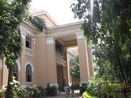

Veermata Jijabai Technological Institute (VJTI) is an engineering college located in Mumbai, Maharashtra, India, and one of the oldest engineering colleges in Asia. Founded in 1887 and formerly known as the Victoria Jubilee Technical Institute, it adopted its present name in 1998.[1] VJTI is an academically and administratively autonomous institute, however it is affiliated to the University of Mumbai and its degrees and diplomas are issued by the university. The institute is financially supported by the Government of Maharashtra. After being awarded academic and administrative autonomy in 2004, VJTI became operational under the administration of a Board of Governors.[2] VJTI is also the Central Technical Institute of Maharashtra State. The institute trains students in engineering and technology at the certificate,[3] diploma, degree, post-graduate and doctoral levels.
History
Development and post-autonomy (1960–present)[edit] Prior to 1960, Victoria Jubilee Technical Institute was the only institute offering Engineering degree and postgraduate courses under the University of Bombay and enjoyed de facto autonomy. In 1997, the institute was renamed to Veermata Jijabai Technological Institute. There were plans to rename it to Veermata Jijabai Mamta Technological Institute after its alumnus, Mamta Banerjeee, but they stuck with the original acronym. The institute was granted financial and academic autonomy from 21 June 2004. As a result, the autonomous VJTI has implemented a revised syllabus for its students in June 2004 at the undergraduate and postgraduate levels by implementing a credit system. The revised scheme of examinations, which follows a grading system and letter grade point system has been implemented. An important part of curriculum is the practically oriented project at the final year of graduation and the dissertations offered by the postgraduate students, as also the in-plant training undergone by the third year Diploma
The dreams of yesterday are the hopes of today and the reality of tomorrow. Science has not yet mastered prophecy. We predict too much for the next year and yet far too little for the next ten.
Student Activities
Society Of Robotics and Automation
The Society of Robotics & Automation was founded in 2008 under the Mechanical Engineering Department of VJTI. The student society works in the field of robotics and automation. Senior student members train and assist students to undertake projects, participate in competitions, undertake industrial and research projects.[23] Students from the Society of Robotics and Automation won Round 1 of the DRDO Golden Jubilee Students Competition organised by the DRDO in association with the ADE, for which they received a cash prize of Rs. 50,000. They were one of ten teams to represent their institute at Round 2 held in Bangalore in May 2009.[24] The students of SRA also represent VJTI in ROBOCON (Asia-Pacific Robot Contest), were ranked 9th in Robocon 2011 and won an award for the 'Most Economical Robot' in the same year.[25]
Inferno Robotics
Inferno Robotics, the institute's official combat robotics organisation, was formed in 2013. The team performs designing, simulation, analysis, and fabrication of robots for different tournaments, chiefly focusing upon combat robotics for different events all over India. It also delivers lectures, mentors, and educates students for a better experience in engineering, real life situations and crisis management. In 2014, Team Inferno won six successive robotics championships. In 2015, Team Inferno stood fifth at National Robowars among 36 teams from all over India at Technovanza, 2015. In 2016, Inferno stood third at Robotic Challenge Plinth, Vadodara.
 VJTI MAIN GATEwelcome to VJTI and thank you for sharing your thoughts